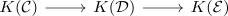
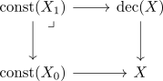
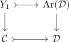
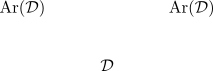
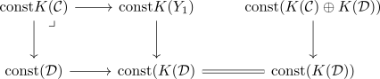
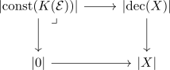
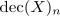
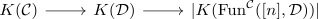
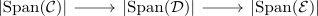

localization theorem of stable connective k-space
Proposition
The connective K space functor from Cat Stable is a verdier localization
Proof
Let
be a verdier sequence. Then $K_0(\mathcal{D}) \twoheadrightarrow K_0(\mathcal{E})$ via the k0 of an exact category since $\mathcal{D} \rightarrow \mathcal{E}$ is a essentially surjective
Now by fiber of a map of connective spectra and pi_0
- recognition principle for connective spectra and commutative groups
- forgetful functor preserves
suffices to show that

For a category $I$ denote by $\mathrm{Fun}^{\mathcal{C}}(I, \mathcal{D})$ the full subcategory of $\mathrm{Fun}(I, \mathcal{D})$ such that $\mathrm{cofib}(F_i \rightarrow F_j) \in \mathcal{C}$ for all $I$.
Now consider $Y \in \mathrm{Fun}(\Delta^{\mathrm{op}}, \mathrm{Cat}_{\infty}^{\mathrm{st}})$ where $[n] \rightarrow Y_n = \mathrm{Fun}^{\mathcal{C}}([n], \mathcal{D})$
this is welldefined via functor to cat infinity and restriction to objectwise subcategories
Here the degeneracy add some identities and the boundary
Now use composition of morphisms with cofiber in a stable subcategory
Hence set $Y \in \mathrm{Fun}(\Delta^{\mathrm{op}}, \mathrm{An})$ with $X_n = \mathrm{Fun}^{\mathcal{C}}([n], \mathcal{D})$.
Then we will compute the geometric realization of $X$
using decalage fiber sequence we get

here use $Y_0 = \mathrm{Fun}^{\mathcal{C}}([0], \mathcal{D}) \simeq \mathcal{D}$ where the condition is trivially true.
Furthermore $Y_1$ is given by the pullback

now use cofiber shift of the arrow category of a stable infinity category

where we get
\begin{displaymath}
\begin{tikzcd}
\mathcal{D} \arrow[equal, ]{r}{} & \mathcal{D} \dar &
Y_1 \rar & \mathrm{Ar}(\mathcal{D}) \dar &
\mathcal{C} \rar & \mathcal{D} &
\end{tikzcd}
\end{displaymath}where by
pullback of a split verdier sequence as split verdier sequence
now there exists a pullback diagram

this gives a pullback diagram
Here we have used geometric realization of a decalage
If we can show that

is a pullback, then we get $\vert X \vert$ as candidate
we will use rezk equifibrancy condition (???) ex. 1 sheet 4 colimit cone and cartesian transformation in Anima ? pullback in anima functor category and cartesian transformation ? hence we need to show that
Here

we claim that $d_n: \mathrm{Fun}^{\mathcal{C}}([n+1], \mathcal{D}) \rightarrow \mathrm{Fun}^{\mathcal{C}}([n], \mathcal{D})$ is a split verdier projection, that is has fully faithful left adjoint and right adjoint. Now the functor has fully faithful right adjoint given by splitting lemma of verdier sequences
now this square is one in cartesian commutative Group $\mathrm{CGrp}(\mathrm{An})$
Here we get
The map induced on vertical fibers over $0$ in $K(\mathrm{Fun}^{\mathcal{C}}([1+n], \mathcal{D}))$
now we get that there exists a fiber sequence

where remains to show that $\vert K(\mathrm{Fun}^{\mathcal{C}}([n], \mathcal{D})) \vert$
Here we get
for that we unravel the definition of the connective k-space
we want to prove that

1)
** now we need to show that
is a localization
here:
it will take as long to get used the notation as to understand the proof
the